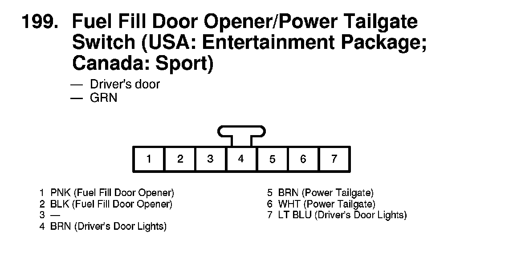
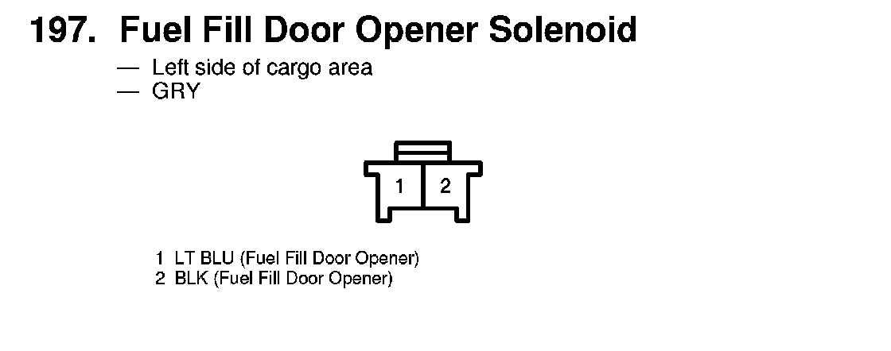

Operation CHARM
: Car repair manuals for everyone.
Home
>>
Acura
>>
2007
>>
MDX V6-3.7L
>>
Repair and Diagnosis
>>
Body and Frame
>>
Doors, Hood and Trunk
>>
Fuel Door
>>
Fuel Door Release Actuator
>>
Diagrams
Fuel Door Release Actuator: Diagrams
199. Fuel Fill Door Opener/Power Tailgate Switch (USA: Entertainment Package; Canada: Sport):

197. Fuel Fill Door Opener Solenoid:
